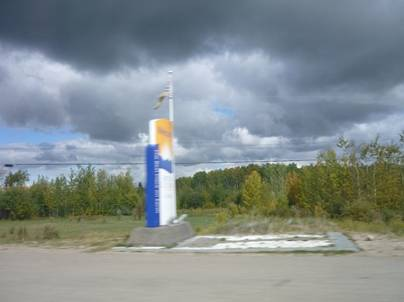
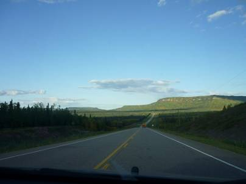
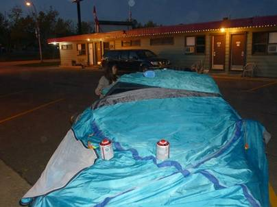

１０日目(9/13)〜秋の訪れ〜
Valleyview to

宿を後にし、北西を目指す。今日はアルバータ州から州境を越え、再びブリティッシュコロンビア州に戻る。


そこそこ大きな町、グランドプレーリーを過ぎ、さらに西へ。どこまでも続くハイウェイの両側に広がる広葉樹林の森は、早くも黄色く色づき、秋の訪れを知らせている。ここまで来るとすっかり車の往来は減り、家など人工物もまばらだ。途中では道路工事をしていた。冬が長いカナダでは、道路工事は夏季の間に集中的に行うそうだ。

あっ、州境を越えたっ･･･


広大な平原に広がる黄色いお花畑、羊の群れ。僕にとっては何もかもが心地よかった。

まだ極北には入ってないが、ここで初めてユーコンナンバーを目撃！

ノーザンブリティッシュ。緑に覆われたなだらかな丘陵地がどこまでも続く。内陸に入ってからずっと感じていたのは、寒暖の差が非常に激しいということ。朝は身震いするほど寒く、紅葉もうなづけるのだが昼になるとぽかぽか陽気。車の窓を閉め切ったまま走ると汗をかいてしまうくらい暑い。そしてまだ日は長く、朝から夕方までほとんど太陽の高さは変わらないように感じる。たとえ正午になっても太陽が高く上がるわけではなく、夜太陽が沈んでもなかなか暗くはならない。地平線に対して斜めに沈んでいくので、このような現象が起きる。

フォートネルソンに向けて順調に車を走らせていたと言うのに、手前100kmくらいの地点で突然道路が未舗装になってしまった。制限速度も50kmになり、渋滞も舗装路に変わるまで続いた。

道路工事中だったのか、まだアスファルトを敷いていなかったのか、数十キロ続いた未舗装区間が終了☆舗装路の滑らかさがありがたい。再びアクセルを踏み込み、100km/hで快速移動。

宿に到着。適当に街中を探して見つけた安そうなモーテルへ。今日の宿も綺麗で快適。夕飯はSave on foods系列のスーパーで出来合い物を買ってきた。フルーツジュースやカットサラダは手軽にビタミンが取れるので便利。毎日ファストフードや肉ばかりでは脂肪だけが蓄えられてしまう。カナディアンロッキーで根城にしていたテントは湿ったまま収納してしまっていたので、カビが生えるのを防ぐため一晩車の上にかけて干しておくことにした。